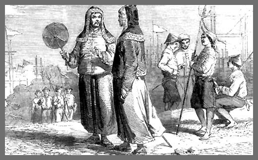

太平天国将士
中国历史上规模最大的农民起义是清末发生的太平天国起义。起义的发源地是广西桂平西山脚下一个名不见经传的地方叫金田村。金田是一块土地肥沃的小盆地，地理位置很特别。西去20公里是著名的西山，海拔1009米的西山脚下是两条大河的汇集处，一是郁江，一是黔江。黔、郁两江汇集了24条江河之水，一西一北奔腾万里汇聚古城桂平就叫西江。西江流经广东后叫珠江。西山是佛教胜地，也是桂南的名山。有人说是郁江、黔江的豪迈气势与万年精神造就了郁郁葱葱雄伟峻秀海拔高达1009米的西山，造就了轰轰烈烈的太平天国起义，造就了天王洪秀全，东王杨秀清，南王冯云山，西王萧朝贵，北王韦昌辉，英王陈玉成，翼王石达开等一代英豪。自公元1851年1月11日，太平天国农民起义在金田村暴发后，他们以排江倒海摧枯拉朽之势，从南到北前后征战14年，沉重地打击了摇摇欲坠的大清王朝。怀着对英烈们无限敬仰之情，今年夏天我专程去了一趟太平天国农民起义发源地----金田村。
农民起义发源地
想象中举世闻名的金田村肯定是山高林密、水深路险的地方，实地一看，金田村却是一个一望无际的小平原。从桂平到金田有50华里，也许是因为革命未获成功之故，省城南宁至梧州已有高速公路相通，但桂平到金田50华里的路至今仍是解放前修筑的坑坑凹凹高低不平、晴天一身灰雨天一身泥的“水泥路”。说来或许你不相信，山青水秀河汊纵横良田万顷的金田平原，至今没有一家象样的乡镇企业，没有一家可供游客驻足歇息的宾馆饭店和招待所。这里的人大部分仍以开山烧炭和种田种地打渔为生。金田村是个有万余人的小镇，镇里最好的建筑是一所社会捐资的“金田中学”。走过坑坑洼洼破破烂烂的街道，汽车往左拐进一条只能容一辆汽车单行的石砂路，行驶2公里就是历史上著名的金田村。村子散乱地立着几十栋广西特有的“干打垒”乡村民居。村的西南方有一座二三百米高、方圆数公里的山包，叫犀牛岭。犀牛岭看上去平平常常，唯一不同的是岭上长满了高大的松柏，郁郁葱葱，显示活力与生机。有道是“山不在高，有仙则名；水不在深，有龙则灵”。犀牛岭虽不高，但它背倚荆山，前横沃野，北临紫水，南俯平地田畴。居高临下，地势险要，是一块“进可攻、退可守”的灵气之地。
从山脚下沿着青石阶梯拾级而上，在半山腰的绿树丛中，一座钢筋水泥结构的牌坊式建筑物拔地而起，这是太平天国金田起义纪念碑，纪念碑上嵌刻着原全国人大副委员长周建人先生题写的“金田起义遗址”六个红底金字，字体秀逸，笔力遒劲。洪秀全手握钢刀横眉远眺，高达20米的大理石塑像迎风屹立在腰。游人到此瞻仰时，莫不浮想联翩，嘘唏感叹。
犀牛岭的北面尽头是金田起义誓师的地方，叫古营盘。据说这座古营盘是明朝大藤峡瑶族农民起义领袖侯大苟所建，古营盘为一块正方形的平坦之地，约有千余平方米，四周为四米高的土垣。土垣外西北面的岭脚下为犀牛潭，东西为四五十米高的陡坡，南面是营盘的出入口，两边挖以壕堑，壕堑外有两条高三米宽二米的东西走向通道。东通道可往金田村大本营，西通道直通犀牛潭提取用水。
现在的犀牛潭是一口50米见方的荷花池，犀牛潭原是紫水河中旧河道里的一个深潭。据说当年这里有犀牛栖息，并且常常“反水”（浮出水面），故曰犀牛潭。金田起义前夕，犀牛潭是太平军秘密存放武器的地方。自称“上帝儿子”的洪秀全，为鼓动老百姓跟随他造反，在誓师大会上神秘兮兮地煸动大伙说：现在造反的时机到了，万能的上帝在岭下的犀牛潭为我们准备了造反的武器。众信徒半信半疑，最后还是有人去扛来了十多架“龙骨车”，用了三天三夜的时间，戽干了犀牛潭的，果然在潭底里获得刀、枪、戟、矛等数万付各种武器。殊不知是洪秀全等事先打造好扔进水潭里的。在他的号召下，众信徒们奋不顾身揭竿而起。起义军从几千人发展到几万人几十万人，金田村周边的村寨更是一呼百应，男男女女倾巢而出参加太平军。当地有首民谣说：“想食龙眼不怕远，想食仙桃不怕高，想要乾坤得扭转，快跟朝贵去六窑。男的要跟萧朝贵，女的要学洪宣娇。”他们不怕流血牺牲，心里只有一个信念：“有田同耕、有饭同食、有衣同穿、有钱同使，无处不均，无处不乐，无人不饱暖”。这是他们向往的天国社会。起义军从广西过湖南攻湖北过长江一直打到帝都南京，1861年建都南京称天京。要不是因为内讧，中国的历史也许会重写新篇章。
村的西北面是韦昌辉故居，韦昌辉受封太平天国北王。据史料记载：韦家“素业质库，兼饶田产”，在浔洲府城开设有典当业，是村里比较富有的小财主。家业虽富，但却没有政治地位，有钱无势的他常常受到邻村官绅宦户的欺凌。洪秀全来金田一带传教，韦昌辉积极主动参加了拜上帝会，韦昌辉入会后又劝说全族300余人入会，将全部家产献出，作为拜天地会活动费用，并在家设十二座打铁炉日夜打制武器。又将武器涂上桐油，密藏于犀牛潭中。起义初期，韦家就成了太平军的大本营，几万人所需粮食，均由韦昌辉筹集供给，包括向豪绅摊派。这个彻底的革命者，因为内讧和争权夺利，他先杀了东王杨秀清妻儿家小和部属两万余人，后又杀死翼王石达开全家几百口人，同时还追杀石达开。最后又带兵围天王府，领杀天王洪秀全，引起众怒。洪下令诛韦，韦昌辉被捉处以极刑，“北王”爵号也被削去。
革命运动的摇篮
说到太平天国革命不能不提紫荆山，因为紫荆山对于太平天国犹如延安对于中国共产党。紫荆山位于金田平原的西北面，方圆百里，群山巍峨、层峦叠嶂、雄关四伏、隘口连环，它西连武宣、象州，北通金秀，东出平南，为浔（洲）、柳（州）、梧（州）三府的交通要冲。加之山大林密路险，历来为兵家必争之地。明代瑶族首领侯大苟领导的大藤峡瑶族农民起义之峰火最初也在这里点燃。太平天国的西王萧朝贵、辅王杨辅清、祝王吉文元、嘏王卢六等起义前均紫荆山以烧炭为生。紫荆山的高坑冲是洪秀全拜上帝会总机关所在地；蒙冲是冯云山率众捣毁雷神庙处；茶地是太平军从象州回师紫荆山时总部所在地；猪儿峡、双髻顶山是太平军与清军进行首次恶战之地；太冲是冯云山的教馆遗址。这里的每一处遗址都有一段可歌可泣的故事。冯云山是太平天国的创始人，是位杰出的政治家、思想家和军事家，他与洪秀全既是同学又是表亲戚。《太平天历》、《太平军目》、《太平礼制》均出自他手。1847年冬天，冯云山在紫荆山大冲教书，写了一幅对联张贴在教馆大门口：“暂借荆山栖彩凤，聊将紫水活蛟龙”。这幅对仗工整、雄心勃勃的对联，既提醒教育当地农民又安抚了众多信徒，同时也激励了太平军众多将士奋不顾身英勇杀敌勇往直前。后人研究太平天国革命时说：这幅对联是太平天国农民起义最好的解释，因为它道出了太平天国农民起义的成功与失败的原因。为什么呢？因为洪秀全等领导的农民起义不同于一般的农民革命，他们是以拜上帝会组织出现的，有明确的政治纲领，如“有饭同食、有衣同穿、有田同耕”等，已具备了社会主义的雏形，特别是洋派人物洪仁轩不仅带来了西方先进的科学文化知识和先进的民主思想，创立颁布了《天朝田亩制》这一反封建的革命纲领，这是一个以解决土地问题为中心，包括政治、经济和社生活等方面的改革方案，它明确提出“天下田天下人同耕”。否定封建土地所有制，要求建立“有田同耕、有饭同食、有衣同穿、有钱同使，无处不均、无人不饱暖”的理想社会，规定了土地分配办法，每家的土地好坏平均搭配。它集中反映了千百年来广大农民迫切要求废除土地所有制的愿望，大大发展了历代农民战争提出的均贫富和均田地的思想。所以，称他们为彩凤、蛟龙一点不为过，因为他们都是人中之杰。博大的紫荆山留不住他们，富饶的金田平原留不住他们，他们只是暂栖荆山与紫水的彩凤和蛟龙，借金田之水和紫荆山养大并搅动整个社会变革。革命成功了或许能为贫穷的金田人民带来点好处，但由于革命未获成功，洪秀全带走了广西金田村聚集了千百年的灵气与英魂，金田一带为此付出了几十万热血儿女的生命，然而今天的金田还是那么贫穷与落后。再盼彩凤落金田是每一个金田人和广西人的愿望。
“聊将紫水活蛟龙”一句已明确点出太平天国起义最终会因为蛟龙翻江倒海和内讧而失败。单独征战，天国十八王个个都是蛟龙彩凤。但是如果打下江山坐在一起，太平“蛟龙”们就会互相猜忌、争权夺利搞内耗。正如柏杨先生所说：“单个看中国人个个是条龙，聚在一起就会变成了虫。这是中国人丑陋的一面”。东王杨秀清居功自傲、独断专行，借天父传言，杖责天皇，逼封万岁；北王韦昌辉一意孤行、滥杀无辜；天王洪秀全功成名就定都南京后即深居简出不理朝政，加之贪恋荣华富贵，不听“让城南走”的忠义良言，终于导致天怨人怒，形势恶化。1864年7月19日，天京城被湘军攻陷，蛟龙终是蛟龙而不是金龙。一场纵横十八省，历时十四年的太平天国革命就这样宣告失败了，可惜忍辱负重的翼王石达开，忍着全家老小均被韦昌辉杀得一个不留的悲伤负气孤独地出走。两年后也被清军全歼于天险大渡河口。这些人为的悲剧注定金田村500年不能翻身。
无论是悲剧、喜剧还是闹剧，任后人怎么评说，太平天国起义终究是一出荡气回肠的英雄剧。只是它流的血太多，特别是无辜者的血；流的泪太多，是后人唏嘘感叹的泪；留下来的失望与希望都太多。但无论怎样说我们都要感谢这场农民革命。正是这场以悲剧结束的农民革命，造就了一批可歌可泣的英雄豪杰，削弱和动摇了清政府的反动统治，为孙中山先生领导的新民主主义革命推翻清王朝，结束中国历史上的千年帝制打下了良好的基础。